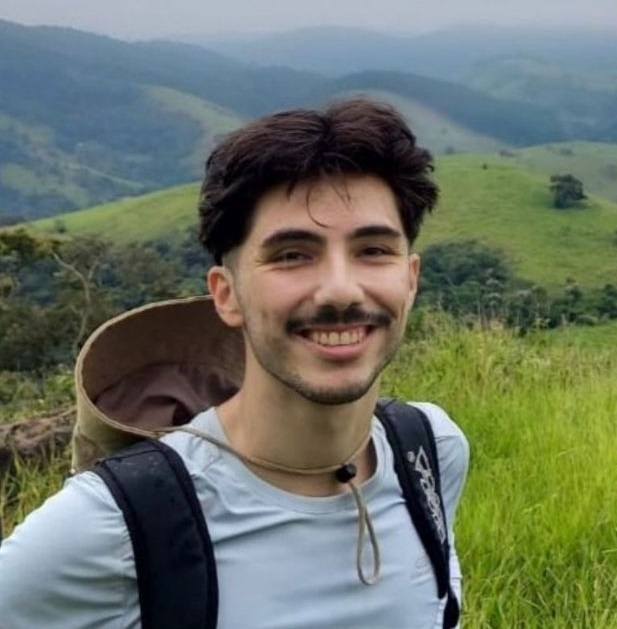
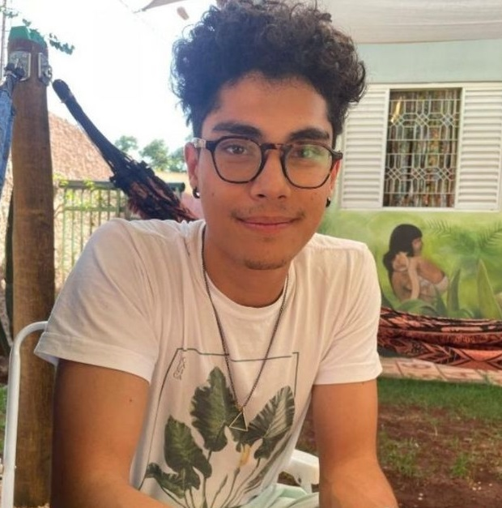
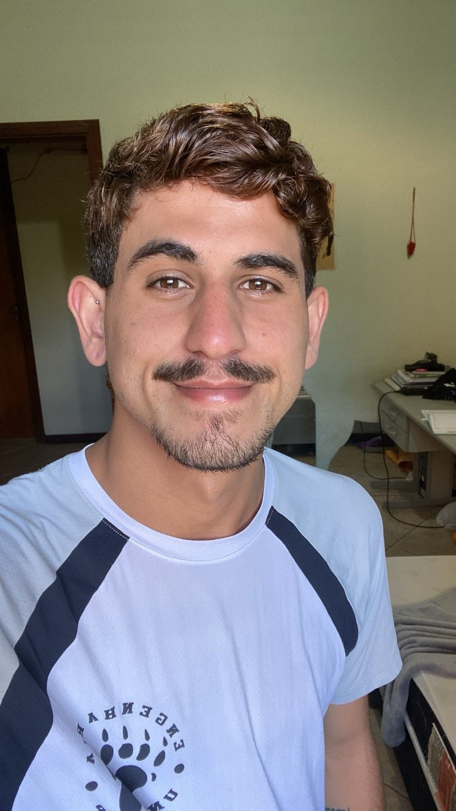
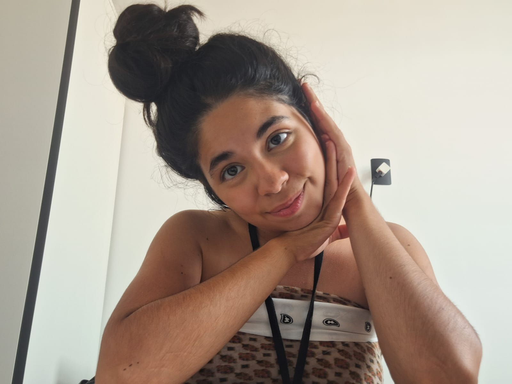
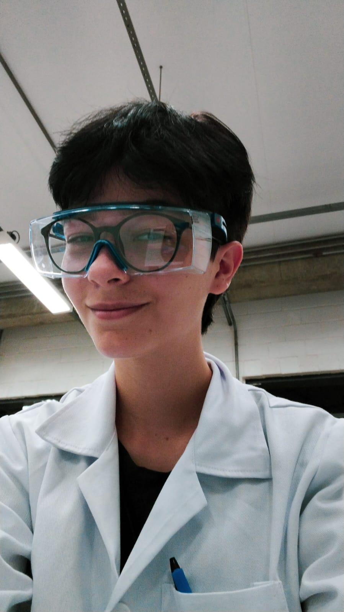

Daniel é graduando em Engenharia Quimica e atualmente é membro de Pessoas do Igarapé

Victor Khuriyeh
Victor Khuriyeh é bacharel e licenciado em Ciências Biológicas pela Unicamp, e mestrando no PPG Ecologia Unicamp. Atualmente é gerente de Projetos e membro de Pessoas do Igarapé

Lucas Kenji
Lucas Kenji é graduando em Engenharia Quimica e atualmente é e membro de Pessoas do Igarapé

Guilherme
Guilherme Santos, graduando em Artes Cênicas pela UNICAMP, integra o grupo Igarapé na área de pessoas

Victoria Rubio
Victória Rubio está se graduando em Farmácia pela Unicamp, atualmente é membro do setor Pessoas do Igarapé

Pê de Albuquerque
Pê de Albuquerque Piccinini é graduando de Química pela Unicamp, e atualmente faz parte da área de Pessoas no Igarapé